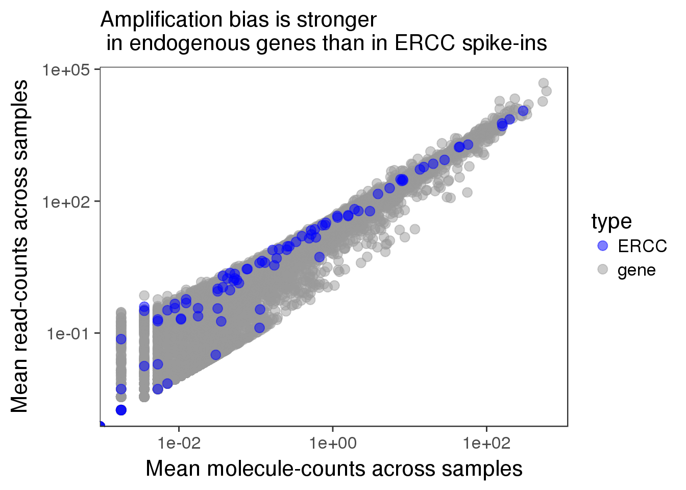
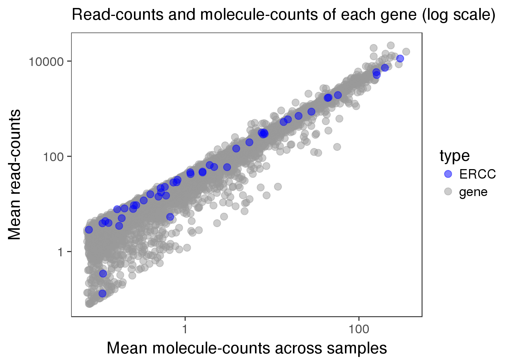
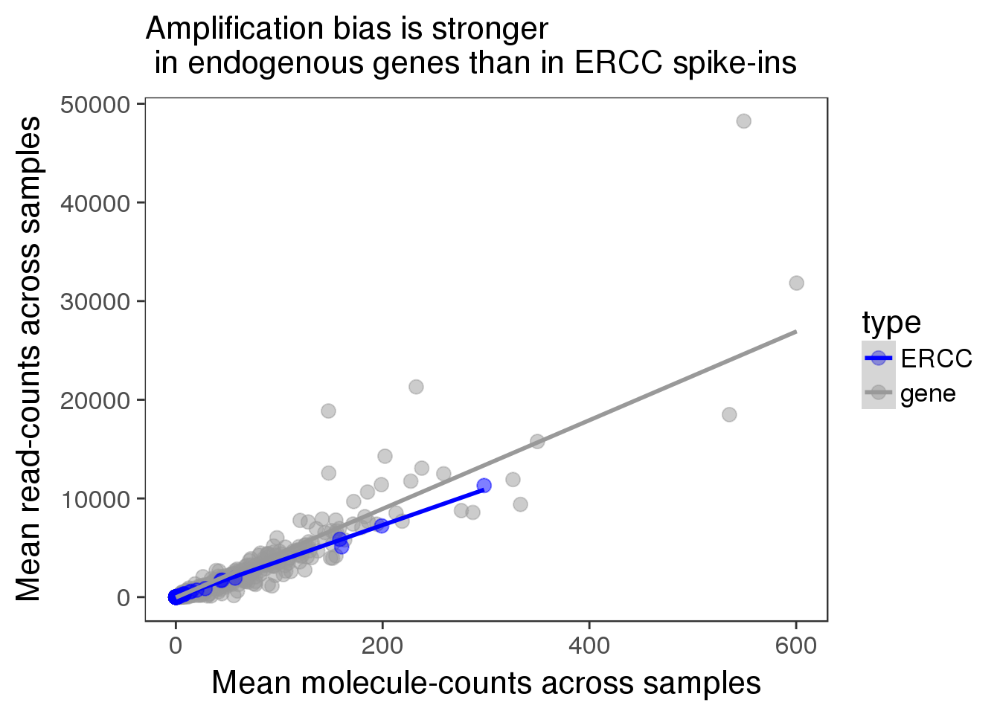
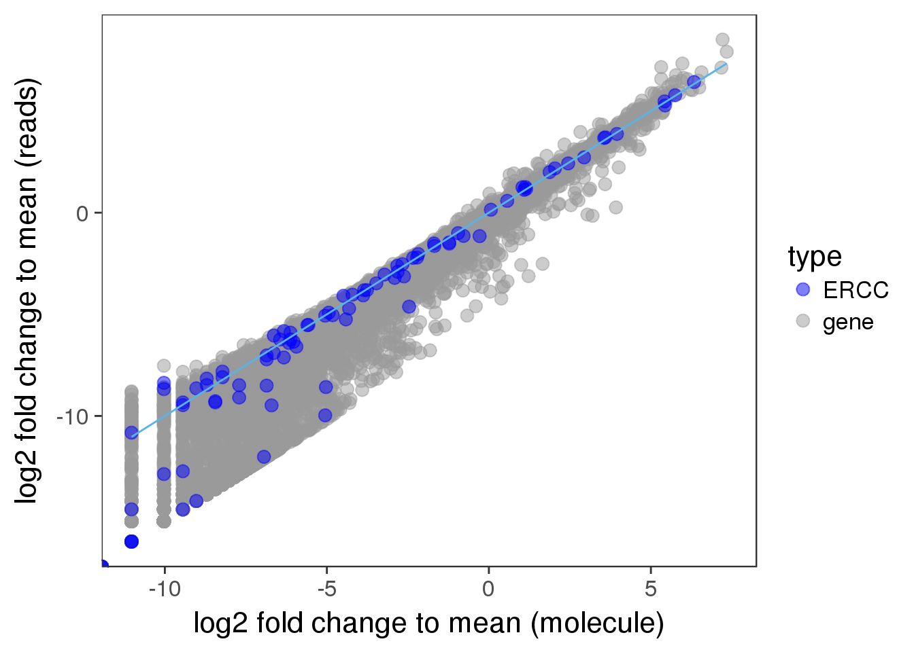
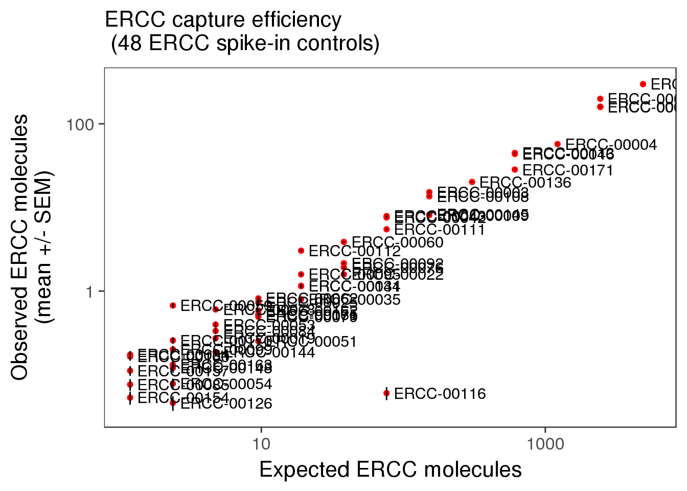
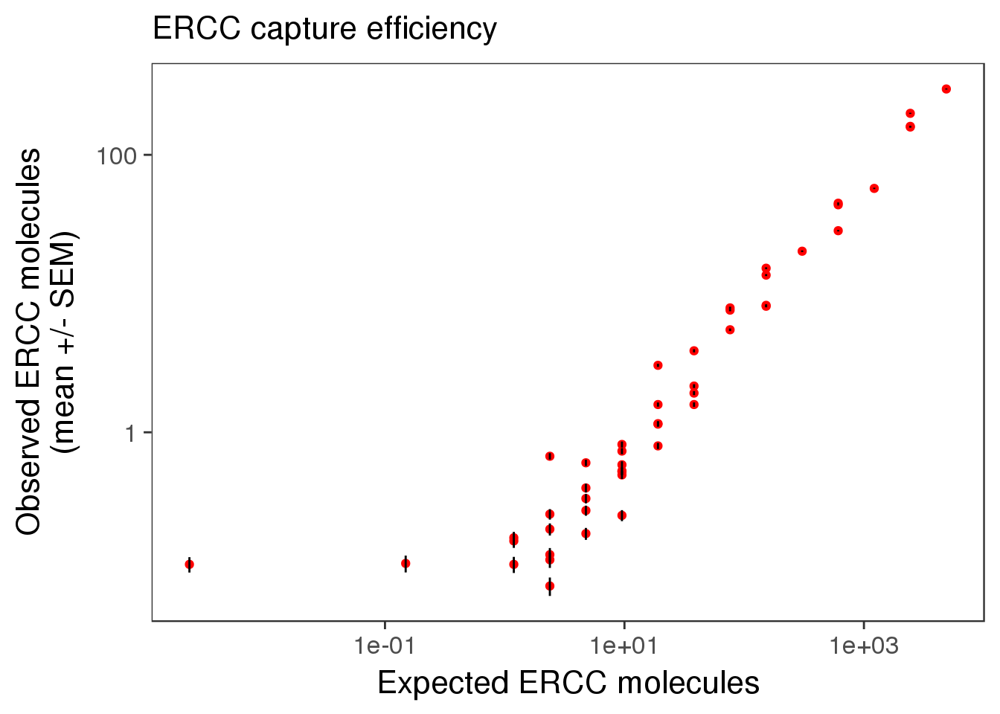
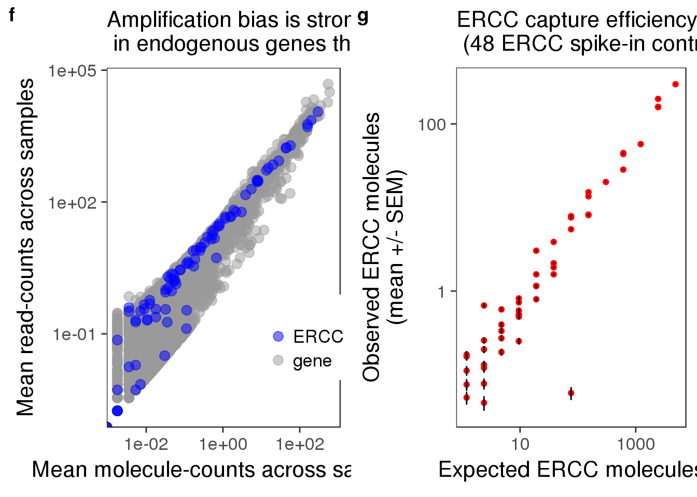

Last updated: 2017-02-08
Code version: 488eb05
library("biomaRt")
library("data.table")
library("dplyr")
library("limma")
library("ggplot2")
library("grid")
library("cowplot")
theme_set(theme_bw(base_size = 16))
theme_update(panel.grid.minor.x = element_blank(),
panel.grid.minor.y = element_blank(),
panel.grid.major.x = element_blank(),
panel.grid.major.y = element_blank(),
legend.key = element_blank(),
plot.title = element_text(size = rel(1)))
source("../../singleCellSeq/analysis/functions.R")Input ERCC molecule counts calculated in capture efficiency.
ercc <- read.table("../../singleCellSeq/data/expected-ercc-molecules.txt", header = TRUE,
stringsAsFactors = FALSE)
head(ercc) id conc_mix1 ercc_molecules_well
1 ERCC-00130 30000.000 4877.93485
2 ERCC-00004 7500.000 1219.48371
3 ERCC-00136 1875.000 304.87093
4 ERCC-00108 937.500 152.43546
5 ERCC-00116 468.750 76.21773
6 ERCC-00092 234.375 38.10887Input annotation.
anno <- read.table("../../singleCellSeq/data/annotation.txt", header=TRUE, stringsAsFactors = FALSE)
head(anno) individual replicate well batch sample_id
1 NA19098 r1 A01 NA19098.r1 NA19098.r1.A01
2 NA19098 r1 A02 NA19098.r1 NA19098.r1.A02
3 NA19098 r1 A03 NA19098.r1 NA19098.r1.A03
4 NA19098 r1 A04 NA19098.r1 NA19098.r1.A04
5 NA19098 r1 A05 NA19098.r1 NA19098.r1.A05
6 NA19098 r1 A06 NA19098.r1 NA19098.r1.A06Input read counts and filter for quality cells.
reads<- read.table("../../singleCellSeq/data/reads.txt", header=TRUE, stringsAsFactors = FALSE)
quality_single_cells <- scan("../data/quality-single-cells.txt", what = "character")
reads<- reads[, colnames(reads) %in% quality_single_cells]Input read counts in high quality cells for filtered genes.
reads_filter <- read.table("../data/reads-filter.txt", header=TRUE, stringsAsFactors = FALSE)Input molecule counts and filter for quality cells.
molecules <- read.table("../../singleCellSeq/data/molecules.txt", header=TRUE, stringsAsFactors = FALSE)
molecules <- molecules[,colnames(molecules) %in% quality_single_cells]Input molecule counts in high quality cells for filtered genes.
molecules_filter <- read.table("../data/molecules-filter.txt", header = TRUE, stringsAsFactors = FALSE)## calculate mean accross all cells for each gene
#in apply- 1=rows, 2=columns
reads_mean <- apply(reads, 1, mean)
molecules_mean <- apply(molecules, 1, mean)
distribution <- data.frame(reads_mean, molecules_mean)
reads_filter_mean <- apply(reads_filter, 1, mean)
molecules_filter_mean <- apply(molecules_filter, 1, mean)
distribution_filter <- data.frame(reads_filter_mean, molecules_filter_mean)
## correlation between reads and molecules
cor(distribution) reads_mean molecules_mean
reads_mean 1.0000000 0.9277703
molecules_mean 0.9277703 1.0000000cor(distribution_filter) reads_filter_mean molecules_filter_mean
reads_filter_mean 1.0000000 0.9408234
molecules_filter_mean 0.9408234 1.0000000There is a higher correlation between molecules and read counts in the filtered data. I would expect a lower correlation if the reads come from sequencing each molecule multiple times. This could be driven by the large numbers of zeros in the data set.
##select ERCC
#distribution has the mean read and molecule count for each gene
distribution$type <- ifelse(grepl("ERCC", rownames(distribution)), "ERCC", "gene")
distribution_filter$type <- ifelse(grepl("ERCC", rownames(distribution_filter)), "ERCC", "gene")
#color palete
cbPalette <- c("#0000FF", "#999999", "#990033", "#F0E442", "#0072B2", "#D55E00", "#CC79A7", "#009E73")
## plots
plot_mean_log <- ggplot(distribution, aes(x = molecules_mean, y = reads_mean, col = type)) +
geom_point(size = 3, alpha = 0.5) +
scale_colour_manual(values=cbPalette) +
labs(x = "Mean molecule-counts across samples",
y = "Mean read-counts across samples",
title = "Amplification bias is stronger \n in endogenous genes than in ERCC spike-ins") +
scale_x_log10() +
scale_y_log10()
plot_mean_logWarning: Transformation introduced infinite values in continuous x-axisWarning: Transformation introduced infinite values in continuous y-axis Amplification bias is more reads per molecule. Why do we think the bias is stronger in endogenous gene?
plot_mean_filter_log <- ggplot(distribution_filter, aes(x = molecules_filter_mean, y = reads_filter_mean, col = type)) +
geom_point(size = 3, alpha = 0.5) +
scale_colour_manual(values=cbPalette) +
labs(x = "Mean molecule-counts across samples",
y = "Mean read-counts",
title = "Read-counts and molecule-counts of each gene (log scale)") +
scale_x_log10() +
scale_y_log10()
plot_mean_filter_log
plot_mean <- ggplot(distribution, aes(x = molecules_mean, y = reads_mean, col = type)) +
geom_point(size = 3, alpha = 0.5) +
scale_colour_manual(values=cbPalette) +
labs(x = "Mean molecule-counts across samples",
y = "Mean read-counts across samples",
title = "Amplification bias is stronger \n in endogenous genes than in ERCC spike-ins") +
geom_smooth(method = "lm")
plot_mean
I can see the bias in this plot because the read-moleculre count is higher in endogenous genes.
Look at the distribution of fold change to mean. As being reported by others, the lowly expressed genes show divergent read and molecule counts
## calculate fold change to mean
distribution$fold_change_read <- log2(reads_mean/mean(reads_mean))
distribution$fold_change_molecule <- log2(molecules_mean/mean(molecules_mean))
plot_distribution <- ggplot(distribution, aes(x = fold_change_molecule, y = fold_change_read, col = type)) +
geom_point(size = 3, alpha = 0.5) +
scale_colour_manual(values=cbPalette) +
stat_function(fun= function(x) {x}, col= "#56B4E9") +
labs(x = "log2 fold change to mean (molecule)", y = "log2 fold change to mean (reads)")
plot_distribution In all of these plots each dot represents one gene in the dataset.
Use only those 50 ERCC genes with at least 1 expected molecule per well.
ercc_list <- list()
for (spike in ercc$id[ercc$ercc_molecules_well >= 1]) {
if (spike %in% rownames(molecules)) {
ercc_list$id <- c(ercc_list$id, spike)
ercc_list$observed_mean <- c(ercc_list$observed_mean,
mean(as.numeric(molecules[spike, ])))
ercc_list$observed_sem <- c(ercc_list$observed_sem,
sd(as.numeric(molecules[spike, ])) /
sqrt(ncol(molecules)))
ercc_list$expected <- c(ercc_list$expected,
ercc$ercc_molecules_well[ercc$id == spike])
}
}
ercc_plot <- as.data.frame(ercc_list, stringsAsFactors = FALSE)
str(ercc_plot)'data.frame': 50 obs. of 4 variables:
$ id : chr "ERCC-00130" "ERCC-00004" "ERCC-00136" "ERCC-00108" ...
$ observed_mean: num 298.1879 57.2784 20.1933 13.5833 0.0603 ...
$ observed_sem : num 2.8448 0.6346 0.2841 0.2141 0.0106 ...
$ expected : num 4877.9 1219.5 304.9 152.4 76.2 ...cor(ercc_plot$observed_mean, ercc_plot$expected)[1] 0.9916157ercc_list_filter <- list()
for (spike in ercc$id[ercc$ercc_molecules_well >= 0]) {
if (spike %in% rownames(molecules_filter)) {
ercc_list_filter$id <- c(ercc_list_filter$id, spike)
ercc_list_filter$observed_mean <- c(ercc_list_filter$observed_mean,
mean(as.numeric(molecules_filter[spike, ])))
ercc_list_filter$observed_sem <- c(ercc_list_filter$observed_sem,
sd(as.numeric(molecules_filter[spike, ])) /
sqrt(ncol(molecules_filter)))
ercc_list_filter$expected <- c(ercc_list_filter$expected,
ercc$ercc_molecules_well[ercc$id == spike])
}
}
ercc_filter_plot <- as.data.frame(ercc_list_filter, stringsAsFactors = FALSE)
str(ercc_filter_plot)'data.frame': 48 obs. of 4 variables:
$ id : chr "ERCC-00130" "ERCC-00004" "ERCC-00136" "ERCC-00108" ...
$ observed_mean: num 298.19 57.28 20.19 13.58 2.15 ...
$ observed_sem : num 2.8448 0.6346 0.2841 0.2141 0.0674 ...
$ expected : num 4877.9 1219.5 304.9 152.4 38.1 ...cor(ercc_filter_plot$observed_mean, ercc_filter_plot$expected)[1] 0.9916498p_efficiency <- ggplot(ercc_plot, aes(x = expected, y = observed_mean, label = id)) +
geom_point(col = "red") +
geom_errorbar(aes(ymin = observed_mean - observed_sem,
ymax = observed_mean + observed_sem), width = 0) +
labs(x = "Expected ERCC molecules",
y = "Observed ERCC molecules\n(mean +/- SEM)",
title = "ERCC capture efficiency")
p_efficiency_plot <- p_efficiency + scale_x_log10() +
scale_y_log10() +
labs(x = "Expected ERCC molecules",
y = "Observed ERCC molecules\n(mean +/- SEM)",
title = "ERCC capture efficiency \n (48 ERCC spike-in controls)")
p_efficiency_plot + geom_text(hjust = 0, nudge_x = 0.05, size = 4)
p_efficiency_filter_plot <- ggplot(ercc_filter_plot, aes(x = expected, y = observed_mean)) +
geom_point(col = "red") +
geom_errorbar(aes(ymin = observed_mean - observed_sem,
ymax = observed_mean + observed_sem), width = 0) +
scale_x_log10() + scale_y_log10() +
labs(x = "Expected ERCC molecules",
y = "Observed ERCC molecules\n(mean +/- SEM)",
title = "ERCC capture efficiency")
p_efficiency_filter_plot
ercc_index <- grep("ERCC", rownames(molecules_filter))
length(ercc_index)[1] 4848 of the ERCC genes pass the filtering.
efficiency <- numeric(length = ncol(molecules_filter))
total_ercc_molecules <- sum(ercc_filter_plot$expected)
for (i in 1:ncol(molecules_filter)) {
efficiency[i] <- sum(molecules_filter[ercc_index, i]) / total_ercc_molecules
}
summary(efficiency) Min. 1st Qu. Median Mean 3rd Qu. Max.
0.03978 0.05459 0.06140 0.06580 0.07621 0.12150 Using ERCC expected values we calculate an efficienct and show a mean percentage as 6.5%. This seems pretty low!
plot_grid(plot_mean_log + theme(legend.position = c(.85,.25)) + labs (col = ""),
p_efficiency_plot + theme(legend.position = "none"),
labels = letters[6:7])Warning: Transformation introduced infinite values in continuous x-axisWarning: Transformation introduced infinite values in continuous y-axis
sessionInfo()R version 3.3.2 (2016-10-31)
Platform: x86_64-redhat-linux-gnu (64-bit)
Running under: Scientific Linux 7.2 (Nitrogen)
locale:
[1] LC_CTYPE=en_US.UTF-8 LC_NUMERIC=C
[3] LC_TIME=en_US.UTF-8 LC_COLLATE=en_US.UTF-8
[5] LC_MONETARY=en_US.UTF-8 LC_MESSAGES=en_US.UTF-8
[7] LC_PAPER=en_US.UTF-8 LC_NAME=C
[9] LC_ADDRESS=C LC_TELEPHONE=C
[11] LC_MEASUREMENT=en_US.UTF-8 LC_IDENTIFICATION=C
attached base packages:
[1] grid stats graphics grDevices utils datasets methods
[8] base
other attached packages:
[1] gridExtra_2.2.1 lme4_1.1-12 Matrix_1.2-7.1
[4] scales_0.4.1 biomaRt_2.30.0 testit_0.6
[7] MASS_7.3-45 cowplot_0.7.0 ggplot2_2.2.1
[10] edgeR_3.16.5 limma_3.30.9 BiocInstaller_1.24.0
[13] VennDiagram_1.6.17 futile.logger_1.4.3 dplyr_0.5.0
[16] data.table_1.10.0 devtools_1.12.0 workflowr_0.3.0
[19] rmarkdown_1.3
loaded via a namespace (and not attached):
[1] locfit_1.5-9.1 splines_3.3.2 lattice_0.20-34
[4] colorspace_1.3-2 htmltools_0.3.5 stats4_3.3.2
[7] yaml_2.1.14 XML_3.98-1.5 nloptr_1.0.4
[10] withr_1.0.2 DBI_0.5-1 BiocGenerics_0.20.0
[13] lambda.r_1.1.9 plyr_1.8.4 stringr_1.1.0
[16] munsell_0.4.3 gtable_0.2.0 memoise_1.0.0
[19] evaluate_0.10 labeling_0.3 Biobase_2.34.0
[22] knitr_1.15.1 IRanges_2.8.1 parallel_3.3.2
[25] AnnotationDbi_1.36.1 Rcpp_0.12.9 backports_1.0.5
[28] S4Vectors_0.12.1 digest_0.6.12 stringi_1.1.2
[31] rprojroot_1.2 tools_3.3.2 bitops_1.0-6
[34] magrittr_1.5 lazyeval_0.2.0 RCurl_1.95-4.8
[37] tibble_1.2 RSQLite_1.1-2 futile.options_1.0.0
[40] assertthat_0.1 minqa_1.2.4 rstudioapi_0.6
[43] R6_2.2.0 nlme_3.1-128 git2r_0.18.0 This site was created with R Markdown